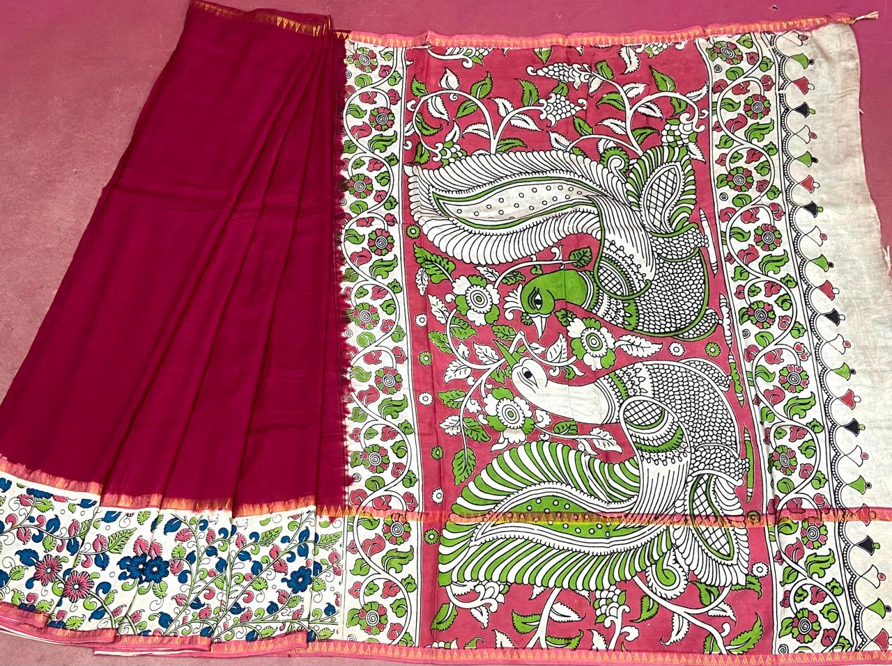

Sign in to upload results
Use the same Google account you use for Tantu.
Sign in
- Save the saree photo and the pose picture below.
- In Gemini, choose Nano Banana Pro.
- Attach the saree photo first, then the pose picture.
- Copy the pose's prompt, paste it and send.
- Save Gemini's picture, upload it here, mark it Good or Needs fix, and say what's wrong.

KW-0015 · the saree to test
- Body · plain deep magenta, no print
- Border · cream with blue, pink and green flowers, pink edge
- Pallu · rose-pink panel with two large peacocks, cream creeper frames, bell-motif end
Save saree photo
The 14 saree poses